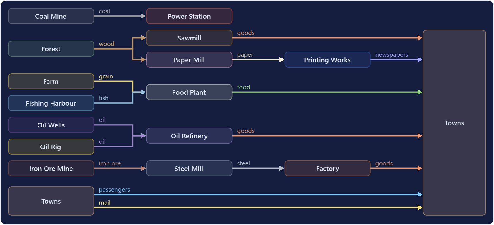
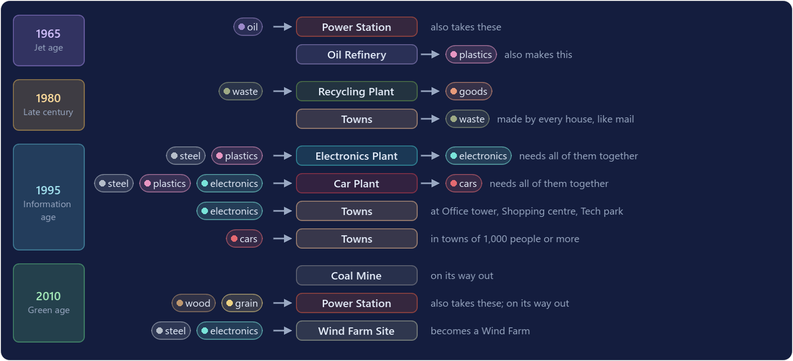

Industry chains
What goes where.
Raw materials go to a plant that turns them into something a town wants. Every arrow is a delivery you are paid for, so a whole chain pays more than once. These are the chains of a game started in 1950:


- A plant turns each unit you deliver into about one unit of output, ready to collect a few days later: more with a full staff, less with few workers (see Workers).
- Coal ends at the power station: nothing comes out.
- Wood has two customers: the sawmill makes goods of it, the paper mill paper for the printing works, which stands by one of the biggest towns.
- Newspapers go stale after 2 days, so carry them fast: trucks, railcars and mail planes take them. Every house of a town of 150 people or more takes them.
- Now and then an industry changes its output. One that sees most of its cargo carried away, or has plenty of staff, is far more likely to grow than to shrink.
- The World map (M) shows where each industry on your map could deliver.
The eras change the chains
Each new era brings new industries and gives old ones new cargo. A new kind of industry opens on the map as its era begins (in a game started later, it is there from the start).


- Two inputs: the electronics plant needs steel and plastics together. It holds what you bring until the other arrives, and each tonne of steel with a tonne of plastics makes about two crates of electronics.
- Waste comes from every house in a station's catchment, the way mail does. A recycling plant turns it into goods.
- Electronics pay well but spoil in days: fast trucks, trains or cargo planes.
- Three inputs: the car plant needs steel, plastics and electronics together, and each set of one of each makes about three cars. Its window says which input is holding it back.
- Cars pay well but are bulky: only the Atlas Car Transporter and car wagons carry them, 10 to a wagon. Towns of 1,000 people or more take them.
- Wind farm sites need 1,000 tonnes of steel and 600 crates of electronics delivered; when both are in, the site becomes a wind farm. Towns within 24 tiles then wait only 80% as long between growth spurts, and the companies that delivered share up to +25 with their councils, by what each brought.
Openings and closures
- Every few years a new industry opens, of any kind the map has: a mine, farm, forest, well, rig or harbour where it fits, a plant near producers of what it takes. It never goes up on anything built.
- When an era brings a new kind of industry, one opens each month until the map has its share.
- A mine, farm or well that nobody has served for two years, and whose output has fallen to 75% of the usual, may struggle. One short of staff is the first to.
- The news warns a year before it closes, and its window and card say when. Carry its cargo before then and it stays open.
- Plants never close (power stations aside, below), and neither does the last industry of a kind, so every chain stays possible.
- Industries on their way out open no more. From 2010 a power station nobody has supplied for two years may struggle and close too.
- When one closes, the stations by it stop supplying its cargo, and rivals give up the lines that served it. An oil rig takes its dock with it.
How much each industry makes is in Industry table.